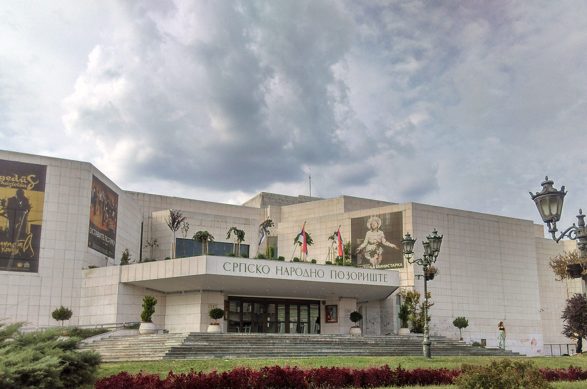
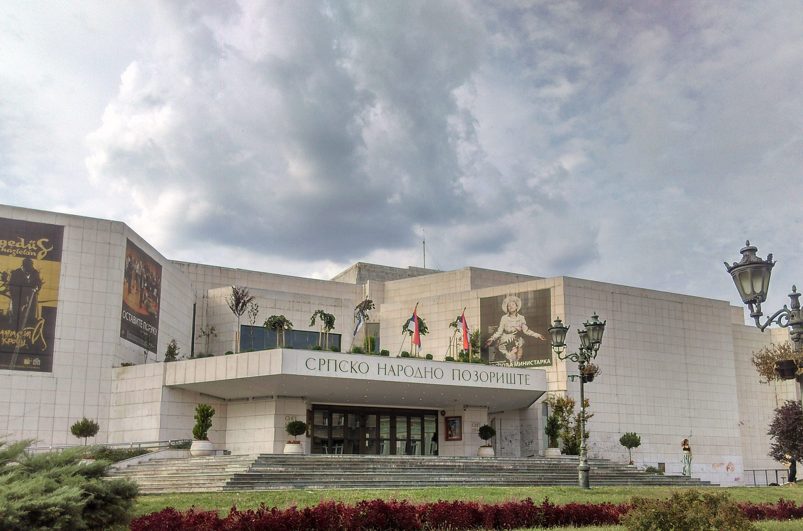

Kroz pozorišnu umetnost čoveku je prikazana humanost, psihologija, motivacija, konflikt i rešenje. Mi kao publika postajemo svedoci putanje drugih osoba osim nas samih. Kao umetnici, stavljamo se u emocionalne i intelektualne situacije koje se možda nikada neće pojaviti u našim ličnim životima. Pozorište nas promoviše da damo moć istini, da rizikujemo i da se zalažemo za nove i različite glasove, podseća nas da nismo sami.
Ne može se precizno utvrditi kada je pozorišna umetnost počela da se baštini u srpskoj kulturi, jer i sam pojam pozorišta je dosta fluidan. Emanuel Kozačinski, režirao je prvu predstavu „Traedokomediju” u Sremskim Karlovcima 1734. godine. To je bila školska predstava, a svoje prave začetke pozorišna umetnost je dobila radom Joakima Vujića-oca srpskog teatra. Iako su profesionala pozorišta na tlu Srbije počela da se razvijaju sredinom 19. veka, pozorišna izvođenja bez scenarija, s improvizacijom, datiraju iz doba srednjeg veka.
Jedna od najpoplurajnijih pozorišta u Srbiji, zbog svog raznovrsnog repertoara su:
.jpg) 

U slojevitoj prozi, opevan nomadski nagon za daljinom, za nepoznatim mestom o kojem večno maštamo i uprkos svim razočarenjima o kojima znamo, tako nepopravljivo verujemo da ono mora biti bolje od onoga u kome smo.
Hamlet je glad za apsolutnom iskrenošću. Glad kao eros. Iskrenost je neodbranjiva žrtva. Žrtva kao odluka, kao radost, kao milosrđe. Žrtva koja prelazi u tradiciju.
Zasnovan na čuvenoj Šekspirovoj tragediji, mjuzikl Romeo i Julija je razigran, ali i napet i mračan pogled na univerzalnu priču ljubavnika iz zavađenih porodica. Može li Romeova i Julijina ljubav da opstane ako su daleko od svojih roditelja i Verone?
Uz balet Labudovo jezero Petra Čajkovskog, Uspavana lepotica se smatra najpoznatijim delom ovog kompozitora i uopšte jednim od najviše izvođenih na baletskom repertoaru. Sa pričom o ljubavi, raskošnim kostimima, vilama i svojim klasičnim varijacijama, predstavlja pravo baletsko uživanje.
© copyright 2022 Pozorišta Srbije | Sva autorska prava su rezervisana